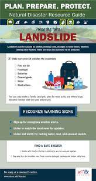
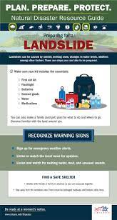

Understanding Landslides: Introduction, Symptoms, and Preventive Measures

Introduction to Landslides
What are Landslides? Landslides are the movement of rock, soil, and debris down a slope due to gravity. They can occur suddenly or gradually and are often triggered by heavy rainfall, earthquakes, volcanic activity, or human activities such as excavation and construction. Landslides can cause significant damage to property, infrastructure, and can pose serious risks to lives.
Symptoms of an Approaching Landslide
While landslides can be sudden, there are several warning signs that may indicate an imminent landslide:
- Cracks in the Ground: Visible cracks or fissures in the ground or on roads and buildings.
- Unusual Soil Movement: Movement of soil or rock, such as bulging or shifting of the ground.
- Increased Water Flow: Increased flow of water in streams or changes in water flow patterns due to soil saturation.
- Falling Debris: Presence of falling rocks, mud, or debris from a slope or hillside.
Preventive Measures During a Landslide
Taking the following precautions can help mitigate the impact of a landslide:
- Move to Higher Ground
- Monitor Weather Conditions
- Secure Property
- Avoid Unsafe Areas
- Prepare an Emergency Kit

 
